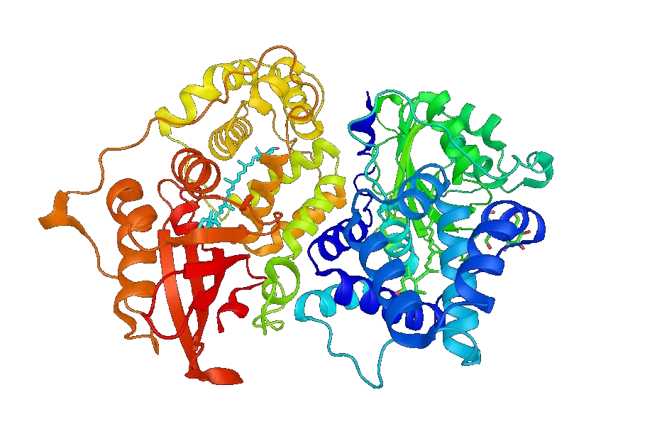

One of the most important requirements for treating any disease is a reliable and cheep assay. An assay is a test used by doctors to determine if a patient has a specific illness and give a diagnosis. While some conditions can be diagnosed through there symptoms alone, others are more mysterious or in order to be treated effectively must be caught early. For example, many cancers produce few distinct symptoms and must be caught before the metastasize. To catch these illnesses doctors often need more advanced assays that rely on blood or tissue samples. For an assay to be effective it must not only separate healthy and diseased populations but also be quick and cheep enough that doctors can administer it.
Two of the most well researched and broadly applicable forms of assays are those relying on proteins and genes. Genetic assays involve sequencing a portion of DNA or RNA to identify know irregularities that are associated with a given condition. Proteomic assays on the other hand involve analyzing the proteins this DNA encodes. Proteomic assays are sometimes preferred because numerous genetic issues can lead to the same protein regularizes and therefore the same condition. In these cases, it makes more sense to test for problematic proteins.
